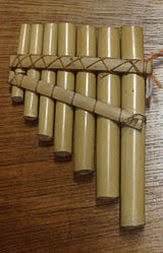
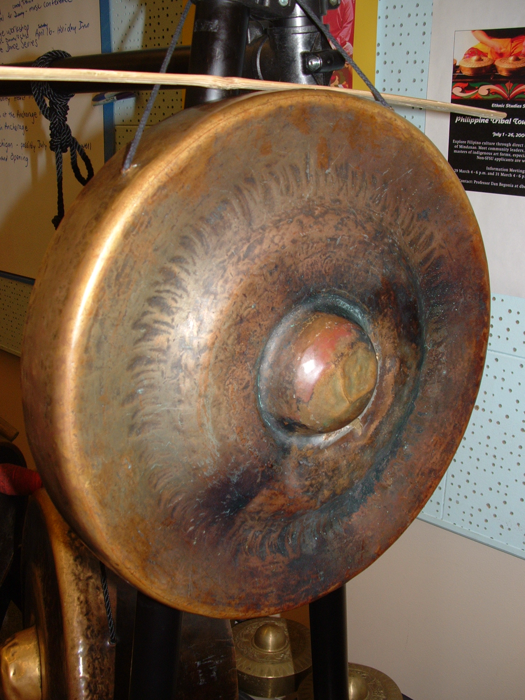
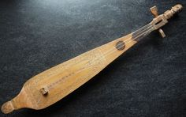

| Image | Name | Origin | Description |
|---|---|---|---|
| Kulintang |
Kulintang originated from the indigenous people of Mindanao. Communities of Mindanao crafted the instrument using locally available materials, as you can see in the image, the gongs are made of brass or bronze and are hung on a wooden frame. Kulintang's unique design and use reflect the cultural diversity in the Philippines. |
The Kulintang consists of a line of small gongs with a specific pitch for each. Each gong when struck creates different pitches. The wooden frame that holds these gongs is called "kudlung". |
|
|  | Tongatong |
The Tongatong originated from the pre-colonial times. The Tongatong is crafted with bamboo or wood, which are abundant materials in the Philippine archipelago. The tongatong eventually evolved in design, in this, you can see the unique cultural practices and diversity of the different communities in the Philippines. |
The Tongatong consists of a set of bamboo or wooden percussion instruments. The Tongatong is played by striking a pole against a solid surface to produce noise (in the image, they are not stuck together). These are usually used in rituals, celebration, and folk music performances. |
|  | Babendil |
The Babendil was created with crafting techniques that have been passed down through generations. "Babendil" originated from the word "bendil" - small gong. |
The Babendil is created from brass or bronze. This instrument reflects the Filipino's craftmanship throug instrument's surface, it has intricate patterns and designs. |
|  | Kutiyapi |
The Kutiyapi came from Filipino artisans who created it from locally available materials. It's made from wood, it has a hollow body and a long neck. It has a very distinctive shape which reflects the Philippines' indigenous communities and identity. |
The Kutiyapi has a long body with a curved neck. Its strings run across the neck and are connected to the tuning pegs at the headstock. Players pluck or strum the stings to produce sound, techniques of playing can vary. |
| Luntang |
The Luntang is used widely among indigenous groups in the Philippines. They are crafted from locally source materials. Its construction and design can be affected by regional traditions and cultural preferences. |
The Luntang uses hollow bamboo or metal tubes spread on a frame rack. Each tube varies in length and produces different sounds. |
|
| hi | hi | hi | hi |